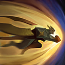

核心裝備
- 虛偽光彩
 荊棘之甲
荊棘之甲 峽谷製造者
峽谷製造者 無盡絕望
無盡絕望 黎明法衣
黎明法衣
以下為本站 7.2d 校正後的標準配置；實戰仍需依敵方陣容調整。


技能優先：Q > W > E
每隔一段時間強化下一次普攻，造成範圍魔法傷害；技能命中可縮短冷卻。
發射兩道風刃匯聚成旋風，持續對區域內敵人造成魔法傷害。
被動提供魔法護盾；蓄力時減傷並減速自己，放開後嘲諷附近敵人。

向後蓄力再向前衝撞，對命中的敵人造成傷害與擊飛。
選擇友方英雄作為落點，為其提供保護後從天而降，造成範圍傷害與擊飛。
3技擊飛 → 被動強化普攻 → 1技旋風 → 2技蓄力嘲諷
三技命中後補被動普攻與一技，接著蓄力二技延長控制；不要在隊友距離過遠時獨自打完整套。
2技蓄力 → 閃現調位 → 放開群體嘲諷 → 1技輸出 → 3技追擊
先蓄力二技再閃現調整範圍，可突然控制多人；嘲諷結束後用一技與三技補傷害或封住退路。
4技鎖定友軍 → 落地後3技擊飛 → 2技嘲諷 → 1技旋風 → 被動普攻
大絕優先落在已被開戰的核心或先手隊友身上，落地擊飛後連接二技嘲諷，快速扭轉人數與陣型。
用一技與被動強化普攻快速清線，二技被動魔法盾可降低法師消耗。三技不要隨意往前撞進敵方塔下，保留作反打或配合打野。
清完中線後觀察邊線與河道，大絕優先支援已經進場或即將被集火的隊友。正面小規模戰可三技擊飛接二技嘲諷，讓隊友安全跟上。
依陣容選擇先手或保排：敵方後排站位密集時閃現蓄力嘲諷；刺客切入時則留在主力旁邊反手控制。大絕不要只看距離，也要確認落點不會被敵人提前散開。
對局名單是本站依英雄機制與目前配置整理的參考，不等同固定勝率。
中路優先處理爆發、控制與抗性問題；標準輸出核心不因單一威脅整套推翻。
觸發：對線或團戰有能直接貼近你的刺客／爆發核心，常在完成第一輪輸出前死亡。
蘭頓之兆提供高額物防並降低暴擊傷害。
自然之力在持續承受魔法技能後提供更高的魔法承傷能力。
觸發：敵方有多個關鍵硬控，會讓你無法安全站位或施放完整連段。
改走水星之靴→鎖鏈軍靴，直接補韌性與魔防。
堅毅讓被控期間更耐打，適合前排承接第一波技能。
觸發：敵方前排多，團戰需要你持續處理高生命目標，而不是只秒後排。
前排本身不需要硬轉全輸出，改用能隨目標生命造成持續傷害的防裝處理長戰。
觸發：敵方治療、吸血或回復讓你的消耗與爆發很難真正壓低血線。
標準配置已有重創，不需要再換。
觸發：敵方核心已經針對你的主要傷害類型堆高物防或魔防。
你不是隊伍主要穿透來源，或標準配置已經有足夠百分比穿透／削抗。
提醒：「坦克多」看的是高生命前排；「抗性高」則是對方已經明確堆高物防／魔防，兩種情境不一定相同。
7.2a 中路第四批正式版：技能名稱與核心機制依 Riot Games 台灣《激鬥峽谷》官方英雄資料校正；版本基準採官方 7.2 與 7.2a 更新公告，出裝、符文與對局方向參考 7.2a 當前中路環境後整合。Tier 維持本站既有 46 位中路正式名單評級。｜v62：完整套用阿璃中路固定母版，中路 46/46 全數完成。
本站於 2026-08-27 依 Patch 7.2d 重新檢查此配置。 Tier、出裝、符文與對局屬於 Wild Rift Guide 的整理與分析，不是 Riot Games 官方推薦；版本改動後會再依官方公告與實戰資料校正。